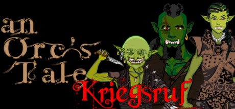

an Orc's Tale: Kriegsruf
an Orc's Tale: Kriegsruf
Details
|  | |
| Playtime | Not Played |
| Last Activity | Never |
| Added | 15/04/2020 |
| Modified | Never |
| Completion Status | Not Played |
| Source | Steam |
| Platform | PC |
| Release Date | 18/04/2021 |
| Community Score | 66 |
| Critic Score | |
| User Score | |
| Genre |
Adventure Free to Play Indie RPG Violent |
| Developer |
Deydrihm |
| Publisher |
Deydrihm |
| Feature |
Commentary Available Partial Controller Support Single Player |
| Links |
PCGamingWiki Community Hub Discussions Guides Store Page News |
Description
Interview mit Ghantor, einem der Charaktere in "an Orc's
Tale":
Interviewer:
Also wieder eins von diesen generischen RPGmaker Spielen, ja ?
Ork:
Noch so eine Unterstellung, und ich beisse Dir den Kopf ab.
I : Nun, was ist denn so besonders daran ?
O: Besonders ? Es ist eine Geschichte, die erzählt werden will. Geschichten sind gut.
I : Was hebt "an Orc's Tale" denn vom - und das müssen sie zugeben - vergleichsweise erbärmlichen Durchschnitt ab ?
O: Korrekte Rechtschreibung ?
(lacht)
Spass beiseite. Das merkst Du schon nach einigen Momenten. Oder nicht. Was kümmerts Dich, es kostet nichts.
Wenn Dir der Humor nicht gefällt, hast Du nichts verloren ausser etwas Zeit.
I : Der Humor, ja...
Es fällt mir schwer zu glauben, etwas sonderlich amüsant zu finden an, wenn ich zitieren darf,
"Sinnlosem Besaufen, mutwilligem Zertreten kleiner hilfloser Tiere und furchtbaren Greueltaten an friedlebenden Wesen"
O: (lacht leise)
I : Nun, also, man hat nichts zu verlieren, warum also sollte man seine Festplatte nicht mit einem weiteren simplen Rpgmaker...
O: *Beisst dem Interviewer den Kopf ab* Ich habs Dir gesagt, Arschloch.
--- An Orc's Tale ---
Features (unter Anderen):
- Tag / Nacht Zyklus.
- Angepasstes Kampfsystem.
- Orkische Kultur sowie das Lernen von Fremdsprachen.
- Bücher. Unendlich viele Bücher.
- Zufallsloot an allen Ecken und Enden, Kräuter sammeln, Bergbau.
- Alchemie / Schmiedesystem (Crafting).
- Ruf- und Ehresystem.
(Ja, man kann das Spiel auch als völliges Arschloch durchspielen.)
- Rasten in der Wildnis und übernachten zur Heilung.
- Verschiedene Lösungswege für viele Quests.
- Bösartig Schwarzer Humor, etliche Referenzen (Eastereggs) und derbe Ficksprache.
Ja, Ihr habt richtig gelesen. Es ist Fantasy, aber eine dreckige, fiese Fantasywelt.
Interviewer:
Also wieder eins von diesen generischen RPGmaker Spielen, ja ?
Ork:
Noch so eine Unterstellung, und ich beisse Dir den Kopf ab.
I : Nun, was ist denn so besonders daran ?
O: Besonders ? Es ist eine Geschichte, die erzählt werden will. Geschichten sind gut.
I : Was hebt "an Orc's Tale" denn vom - und das müssen sie zugeben - vergleichsweise erbärmlichen Durchschnitt ab ?
O: Korrekte Rechtschreibung ?
(lacht)
Spass beiseite. Das merkst Du schon nach einigen Momenten. Oder nicht. Was kümmerts Dich, es kostet nichts.
Wenn Dir der Humor nicht gefällt, hast Du nichts verloren ausser etwas Zeit.
I : Der Humor, ja...
Es fällt mir schwer zu glauben, etwas sonderlich amüsant zu finden an, wenn ich zitieren darf,
"Sinnlosem Besaufen, mutwilligem Zertreten kleiner hilfloser Tiere und furchtbaren Greueltaten an friedlebenden Wesen"
O: (lacht leise)
I : Nun, also, man hat nichts zu verlieren, warum also sollte man seine Festplatte nicht mit einem weiteren simplen Rpgmaker...
O: *Beisst dem Interviewer den Kopf ab* Ich habs Dir gesagt, Arschloch.
--- An Orc's Tale ---
Features (unter Anderen):
- Tag / Nacht Zyklus.
- Angepasstes Kampfsystem.
- Orkische Kultur sowie das Lernen von Fremdsprachen.
- Bücher. Unendlich viele Bücher.
- Zufallsloot an allen Ecken und Enden, Kräuter sammeln, Bergbau.
- Alchemie / Schmiedesystem (Crafting).
- Ruf- und Ehresystem.
(Ja, man kann das Spiel auch als völliges Arschloch durchspielen.)
- Rasten in der Wildnis und übernachten zur Heilung.
- Verschiedene Lösungswege für viele Quests.
- Bösartig Schwarzer Humor, etliche Referenzen (Eastereggs) und derbe Ficksprache.
Ja, Ihr habt richtig gelesen. Es ist Fantasy, aber eine dreckige, fiese Fantasywelt.